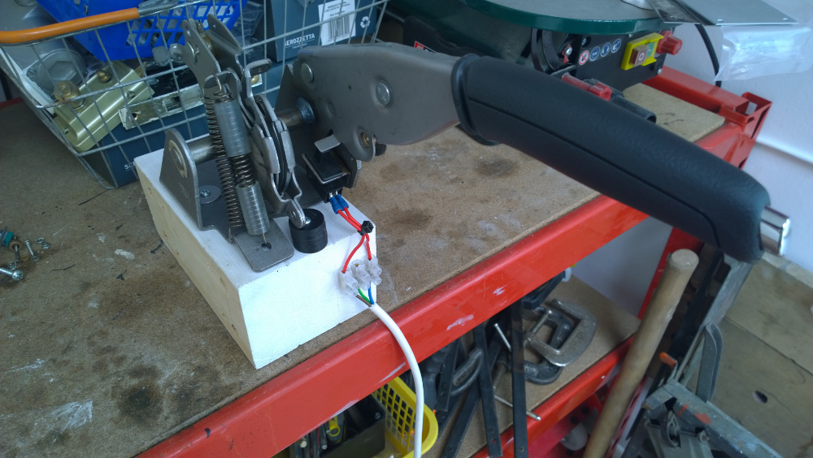
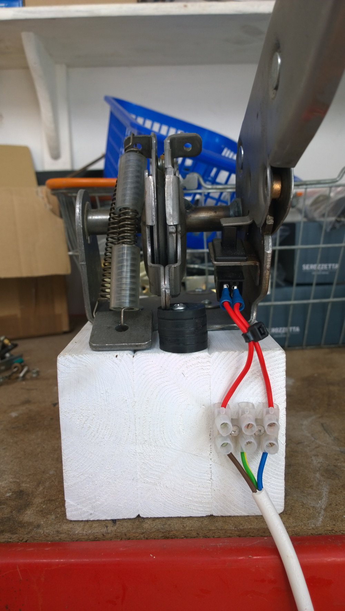

DIY SimRacing Handbrake
I wanted to add a handbrake to my rig to use with various simracing titles but didn't want to spend a lot of money. I bought a new Citroen handbrake mechanism off of eBay which was a bargain at £12 delivered.
I removed the ratchet mechanism, added some springs and a return stop and then mounted it to a solid block of wood.
Initially, I thought about making it analogue with a potentiometer but in the end decided that digital would be perfectly okay and so just used the built-in handbrake warning switch which I wired to a digital input on the Leo Bodnar BU0836-LC Load Cell Joystick Controller that I used for my pedals. You could just as easily use an Arduino or even just buy a cheap USB joystick and wire it to one of the buttons.
I connected this vertically to my rig so you are pulling back on the lever rally style and it works and feels great.


Return to home page.